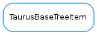

TaurusBaseTreeItem¶

-
class
TaurusBaseTreeItem(model, data, parent=None)[source]¶ Bases:
objectA generic node
-
appendChild(child)[source]¶ Adds a new child node
Parameters: child ( TaurusTreeBaseItem) – child to be added
-
child(row)[source]¶ Returns the child in the given row
Return type: TaurusTreeBaseItemReturns: the child node for the given row
-
childCount()[source]¶ Returns the number of childs for this node
Return type: intReturns: number of childs for this node
-
data(index)[source]¶ Returns the data of this node for the given index
Return type: objectReturns: the data for the given index
-
display()[source]¶ Returns the display string for this node
Return type: strReturns: the node’s display string
-
itemData()[source]¶ The internal itemData object
Return type: objectReturns: object holding the data of this item
-
parent()[source]¶ Returns the parent node or None if no parent exists
Return type: TaurusTreeBaseItemReturns: the parent node
-
qdisplay()[source]¶ Returns the display QString for this node
Return type: QStringReturns: the node’s display string
-
role()[source]¶ Returns the prefered role for the item. This implementation returns taurus.core.taurusbasetypes.TaurusElementType.Unknown
This method should be able to return any kind of python object as long as the model that is used is compatible.
Return type: TaurusElementTypeReturns: the role in form of element type
-